ViralScope AI / video2
ViralScope AI
TikTok / 美妆 / 修容棒 breakdown — for 女性: what's worth copying first, then where conversion stalls.
Key Frames
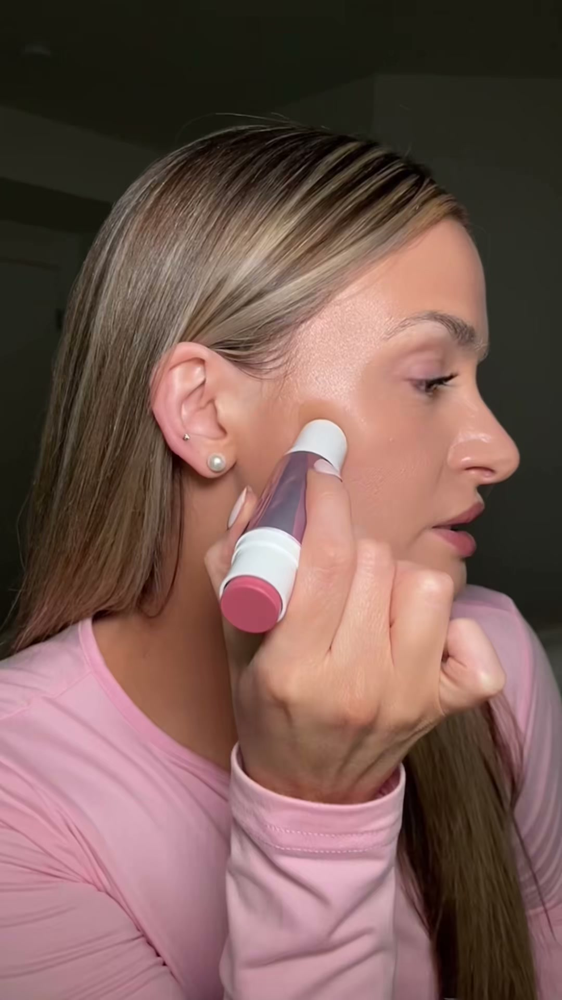
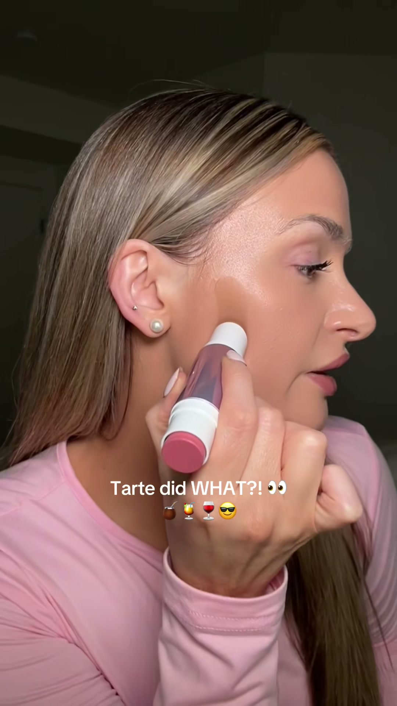
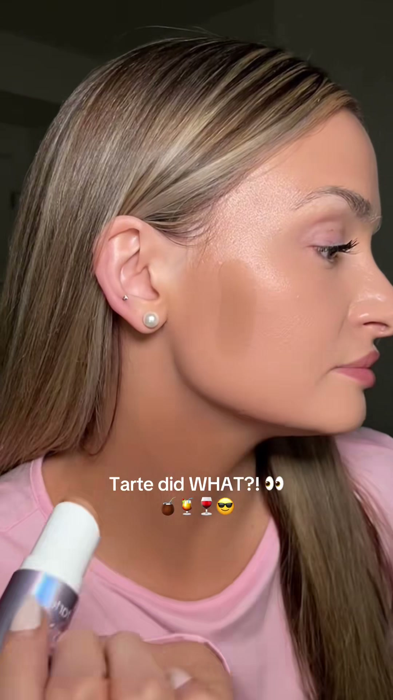
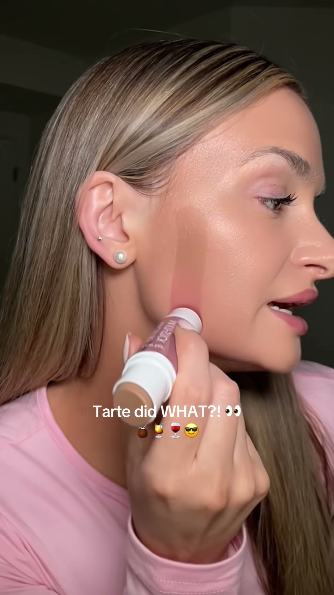
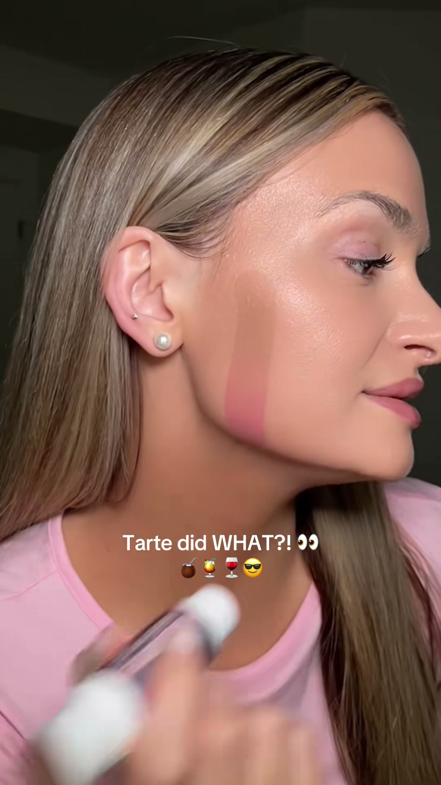
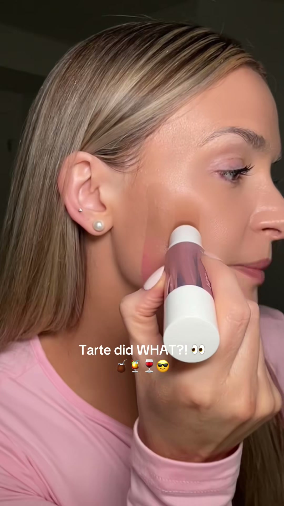
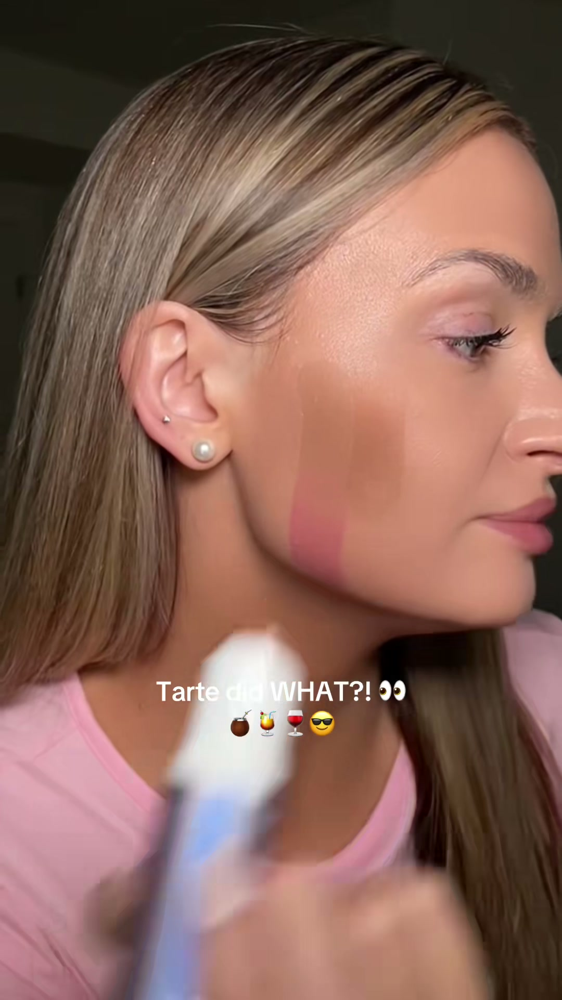
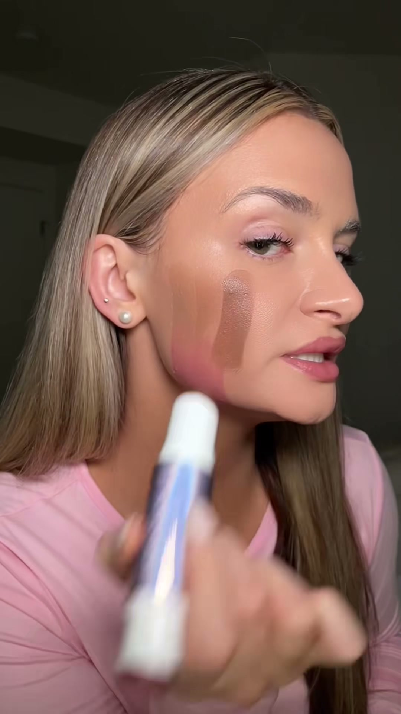
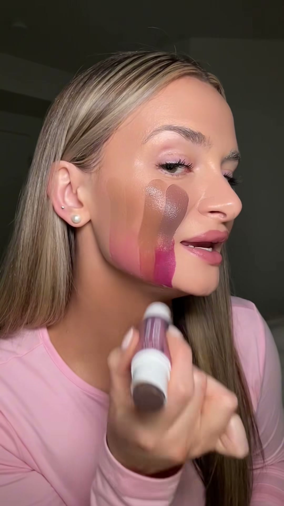
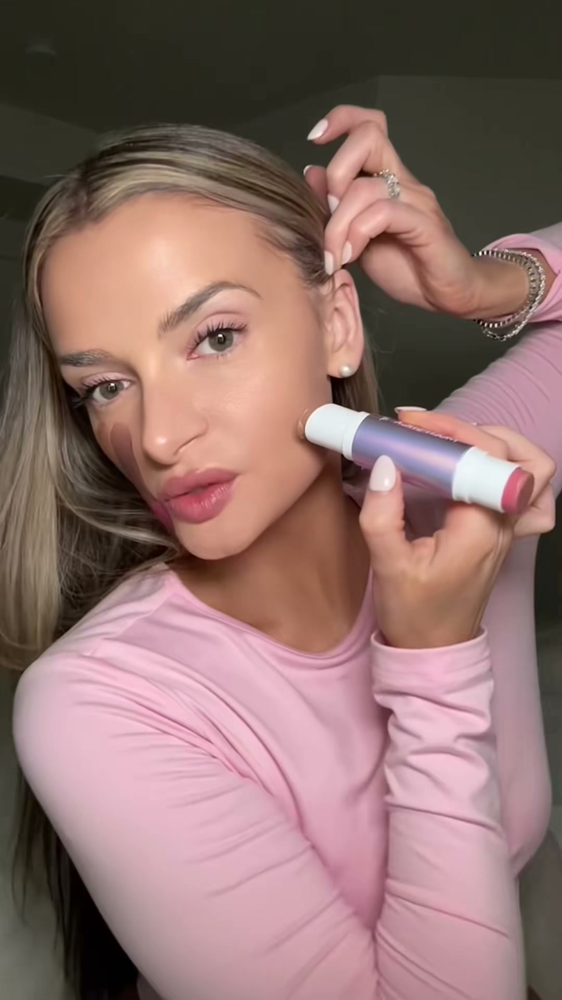
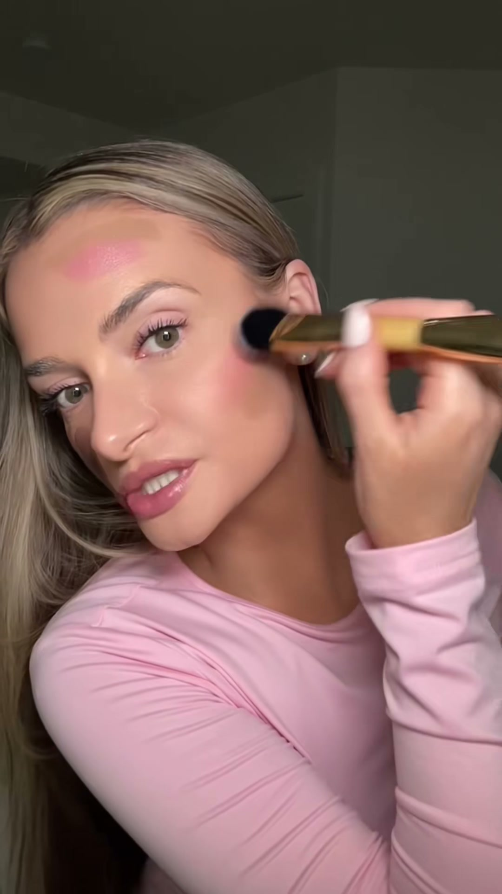
✅ What's Working — Repeatable
Repeatable Viral Formula
Reusable template structure:
- 0.0–0.5s: Start with product already being applied on skin
- 0.5–1.5s: Put a curiosity text hook on screen using the brand/product surprise angle
- 1.5–4.0s: Show the product’s unique mechanism in one clear visual
- 4.0–8.0s: Explain the product in one simple sentence
- 8.0–12.0s: Show 2–4 shade options or use-case variations
- 12.0–18.0s: Demonstrate blend/performance proof live
- 18.0–24.0s: Add one objection-killing claim: easy, long-wear, beginner-friendly, travel-friendly
- 24.0–30.0s: Show final finish and give direct CTA with urgency or bundle reason
Fill-in template:
> “[Brand] did WHAT?!”
> Show product touching skin immediately.
> “This is the new [product name]. You get [feature 1] on one side and [feature 2] on the other.”
> Show 2–4 shades quickly.
> “Look how fast that blends.”
> “If you’re bad at makeup, this is for you.”
> “It lasts all day and [bundle/perk].”
> “It just launched—link below if you want your shade.”
---
Our Brand Version
Ready-to-shoot English script / shot list:
Shot 1 — 0.0–0.8s
Close-up, product already touching cheek.
On-screen text: “A blush + contour stick in ONE?”
Voiceover: “Wait—this has blush on one side and contour on the other.”
Shot 2 — 0.8–2.5s
Draw one contour stripe and one blush stripe on cheek.
Voiceover: “You literally place both in seconds.”
Shot 3 — 2.5–4.5s
Hold stick close to camera, rotate both ends.
On-screen text: “2-in-1 | beginner-friendly”
Voiceover: “This is made for people who want quick makeup without overthinking placement.”
Shot 4 — 4.5–7.5s
Show 3 shade duos on arm or cheek, each with text labels.
On-screen text:
- Fair / Soft Pink
- Medium / Rosy Nude
- Tan / Berry Bronze
Voiceover: “Here are the shades so you can find your match fast.”
Shot 5 — 7.5–11.0s
Blend one side with brush or sponge in 2–3 taps.
On-screen text: “Blends in seconds”
Voiceover: “The texture is creamy, so it blends out super fast.”
Shot 6 — 11.0–14.0s
Show half-face result, then full-face result.
On-screen text: “Soft sculpt + natural color”
Voiceover: “It gives you shape and color without looking harsh.”
Shot 7 — 14.0–17.0s
Creator faces camera directly.
Voiceover: “If you’re not amazing at makeup, this is the kind of product that makes it easy.”
Shot 8 — 17.0–20.0s
Show product + brush bundle if available.
On-screen text: “Bonus brush included”
Voiceover: “And if your set includes the brush, even better.”
Shot 9 — 20.0–23.0s
Final glam close-up.
On-screen text: “Comment ‘shade’ and check the link”
Voiceover: “I linked it below—grab your shade before the popular ones sell out.”
---
⚠️ What to Fix
Conversion Diagnosis · Priority Actions
- Turn this into a repeatable launch-video template. Keep the winning sequence: immediate on-face application, curiosity hook, fast product-format explanation, multiple shade reveal, blend proof, then purchase urgency.
- Preserve the “easy for normal users” positioning. One of the biggest scalable wins here is that the content sells the product as approachable, quick, and low-skill—not just pretty—so future briefs should keep that beginner-friendly framing.
- Scale the concept through structured variants, not major changes. Build more versions using the same formula for other shades, skin tones, and similar products, while adding simple clarity boosters like on-screen shade labels and pinned shade guidance to capture even more high-intent demand.
Creator Feedback
This video performed really well—great job. You nailed the most important parts: the product shows up immediately, the format is easy to understand fast, and the demo makes the item feel simple and worth buying. That combination clearly drove both strong views and strong orders, which is exactly what we want.
For future videos, we’d love you to keep this same overall structure because it’s working: instant application, clear payoff, simple explanation, and a direct reason to buy now. The beginner-friendly tone is also a huge strength—you make the product feel accessible instead of intimidating, which helps conversion a lot.
The main thing to build on is scaling this winning format across more versions: different shades, different skin tones, and similar product launches. If possible, add quick on-screen shade names or a pinned shade guide as a light optimization, since that can help convert even more of the high-intent viewers already showing interest. Overall, this is a strong result and a very repeatable content style.